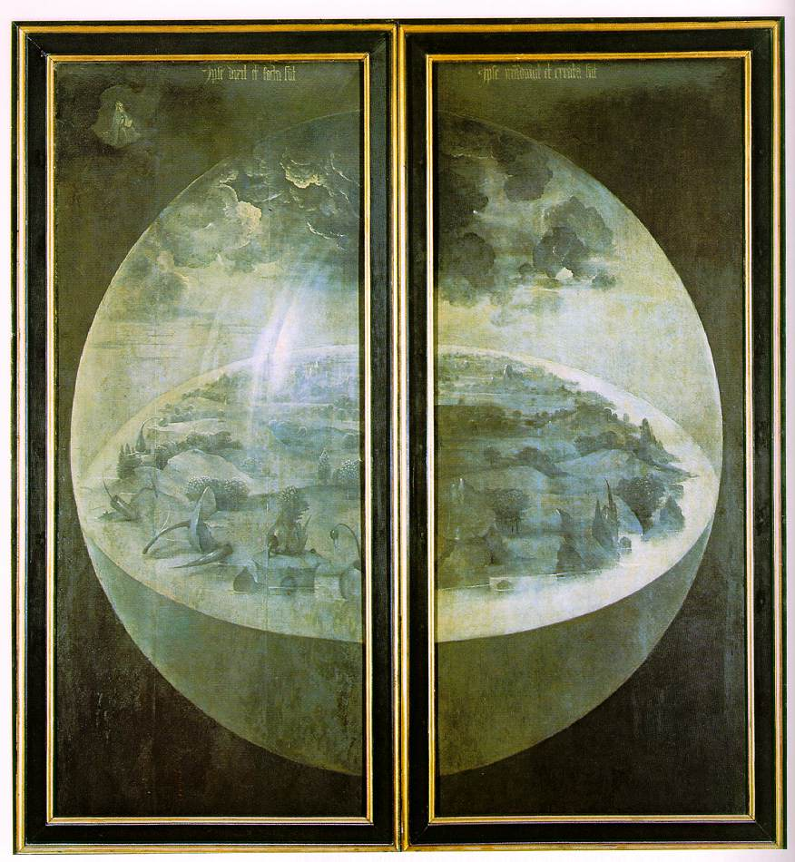

×
Exterior
When the triptych's wings are closed, the design of the outer panels becomes visible.
Rendered in a green–gray grisaille, these panels lack colour, probably because most Netherlandish triptychs were thus painted, but possibly indicating that the painting reflects a time before the creation of the sun and moon, which were formed, according to Christian theology, to "give light to the earth".
The typical grisaille blandness of Netherlandish altarpieces served to highlight the splendid colour inside.
The outer panels are generally thought to depict the creation of the world, showing greenery beginning to clothe the still-pristine Earth.
God, wearing a crown similar to a papal tiara (a common convention in Netherlandish painting), is visible as a tiny figure at the upper left.
Bosch shows God as the father sitting with a Bible on his lap, creating the Earth in a passive manner by divine fiat.
Above him is inscribed a quote from Psalm 33 reading "Ipse dīxit, et facta sunt: ipse mandāvit, et creāta sunt"—For he spake and it was done; he commanded, and it stood fast.
The Earth is encapsulated in a transparent sphere recalling the traditional depiction of the created world as a crystal sphere held by God or Christ.
It hangs suspended in the cosmos, which is shown as an impermeable darkness, whose only other inhabitant is God himself.
Despite the presence of vegetation, the earth does not yet contain human or animal life, indicating that the scene represents the events of the biblical Third Day.
Bosch renders the plant life in an unusual fashion, using uniformly gray tints which make it difficult to determine whether the subjects are purely vegetable or perhaps include some mineral formations.
Surrounding the interior of the globe is the sea, partially illuminated by beams of light shining through clouds.
The exterior wings have a clear position within the sequential narrative of the work as a whole.
They show an unpopulated earth composed solely of rock and plants, contrasting sharply with the inner central panel which contains a paradise teeming with lustful humanity.

The exterior panels show the world during creation, probably on the Third Day, after the addition of plant life but before the appearance of animals and humans.
Interpretation
Detail from the center panel showing two cherry-adorned dancing figures who carry a surface on which an owl is perched.
In the front right corner a bird standing on a reclining human's foot is about to eat from a cherry offered to it.
Because only bare details are known of Bosch's life, interpretation of his work can be an extremely difficult area for academics as it is largely reliant on conjecture.
Individual motifs and elements of symbolism may be explained, but so far relating these to each other and to his work as a whole has remained elusive.
The enigmatic scenes depicted on the panels of the inner triptych of The Garden of Earthly Delights have been studied by many scholars, who have often arrived at contradictory interpretations.
Analyses based on symbolic systems ranging from the alchemical, astrological, and heretical to the folkloric and subconscious have all attempted to explain the complex objects and ideas presented in the work.
Until the early 20th century, Bosch's paintings were generally thought to incorporate attitudes of Medieval didactic literature and sermons.
Charles De Tolnay wrote that the oldest writers, Dominicus Lampsonius and Karel van Mander, attached themselves to his most evident side, to the subject; their conception of Bosch, inventor of fantastic pieces of devilry and of infernal scenes, which prevails today (1937) in the public at large, and prevailed with historians until the last quarter of the 19th century.
Generally, his work is described as a warning against lust, and the central panel as a representation of the transience of worldly pleasure.
In 1960, the art historian Ludwig von Baldass wrote that Bosch shows "how sin came into the world through the Creation of Eve, how fleshly lusts spread over the entire earth, promoting all the Deadly Sins, and how this necessarily leads straight to Hell".
De Tolnay wrote that the center panel represents "the nightmare of humanity", where "the artist's purpose above all is to show the evil consequences of sensual pleasure and to stress its ephemeral character".
Supporters of this view hold that the painting is a sequential narrative, depicting mankind's initial state of innocence in Eden, followed by the subsequent corruption of that innocence, and finally its punishment in Hell.
At various times in its history, the triptych has been known as La Lujuria, The Sins of the World and The Wages of Sin.
Proponents of this idea point out that moralists during Bosch's era believed that it was woman's—ultimately Eve's—temptation that drew men into a life of lechery and sin.
This would explain why the women in the center panel are very much among the active participants in bringing about the Fall.
At the time, the power of femininity was often rendered by showing a female surrounded by a circle of males.
A late 15th-century engraving by Israhel van Meckenem shows a group of men prancing ecstatically around a female figure.
The Master of the Banderoles's 1460 work the Pool of Youth similarly shows a group of females standing in a space surrounded by admiring figures.
This line of reasoning is consistent with interpretations of Bosch's other major moralising works which hold up the folly of man; the Death and the Miser and the Haywain.
Although, according to the art historian Walter Bosing, each of these works is rendered in a manner that it is difficult to believe "Bosch intended to condemn what he painted with such visually enchanting forms and colors".
Bosing concludes that a medieval mindset was naturally suspicious of material beauty, in any form, and that the sumptuousness of Bosch's description may have been intended to convey a false paradise, teeming with transient beauty.
In 1947, Wilhelm Fränger argued that the triptych's center panel portrays a joyous world when mankind will experience a rebirth of the innocence enjoyed by Adam and Eve before their fall.
In his book The Millennium of Hieronymus Bosch, Fränger wrote that Bosch was a member of the heretical sect known as the Adamites—who were also known as the Homines intelligentia and Brethren and Sisters of the Free Spirit.
This radical group, active in the area of the Rhine and the Netherlands, strove for a form of spirituality immune from sin even in the flesh, and imbued the concept of lust with a paradisical innocence.
Fränger believed The Garden of Earthly Delights was commissioned by the order's Grand Master.
Later critics have agreed that, because of their obscure complexity, Bosch's "altarpieces" may well have been commissioned for non-devotional purposes.
The Homines intelligentia cult sought to regain the innocent sexuality enjoyed by Adam and Eve before the Fall.
Fränger writes that the figures in Bosch's work "are peacefully frolicking about the tranquil garden in vegetative innocence, at one with animals and plants and the sexuality that inspires them seems to be pure joy, pure bliss."
Fränger argued against the notion that the hellscape shows the retribution handed down for sins committed in the center panel.
Fränger saw the figures in the garden as peaceful, naive, and innocent in expressing their sexuality, and at one with nature.
In contrast, those being punished in Hell comprise "musicians, gamblers, desecrators of judgment and punishment".
Examining the symbolism in Bosch's art—"the freakish riddles … the irresponsible phantasmagoria of an ecstatic"—Fränger concluded that his interpretation applied to Bosch's three altarpieces only: The Garden of Earthly Delights, The Temptation of Saint Anthony, and the Haywain Triptych.
Fränger distinguished these pieces from the artist's other works and argued that despite their anti-cleric polemic, they were nevertheless all altarpieces, probably commissioned for the devotional purposes of a mystery cult.
While commentators accept Fränger's analysis as astute and broad in scope, they have often questioned his final conclusions.
These are regarded by many scholars as hypothesis only, and built on an unstable foundation and what can only be conjecture.
Critics argue that artists during this period painted not for their own pleasure but for commission, while the language and secularization of a post-Renaissance mind-set projected onto Bosch would have been alien to the late-Medieval painter.
Fränger's thesis stimulated others to examine The Garden more closely.
Writer Carl Linfert also senses the joyfulness of the people in the center panel, but rejects Fränger's assertion that the painting is a "doctrinaire" work espousing the "guiltless sexuality" of the Adamite sect.
While the figures engage in amorous acts without any suggestion of the forbidden, Linfert points to the elements in the center panel suggesting death and temporality: some figures turn away from the activity, seeming to lose hope in deriving pleasure from the passionate frolicking of their cohorts.
Writing in 1969, E. H. Gombrich drew on a close reading of Genesis and the Gospel According to Saint Matthew to suggest that the central panel is, according to Linfert, "the state of mankind on the eve of the Flood, when men still pursued pleasure with no thought of the morrow, their only sin the unawareness of sin."